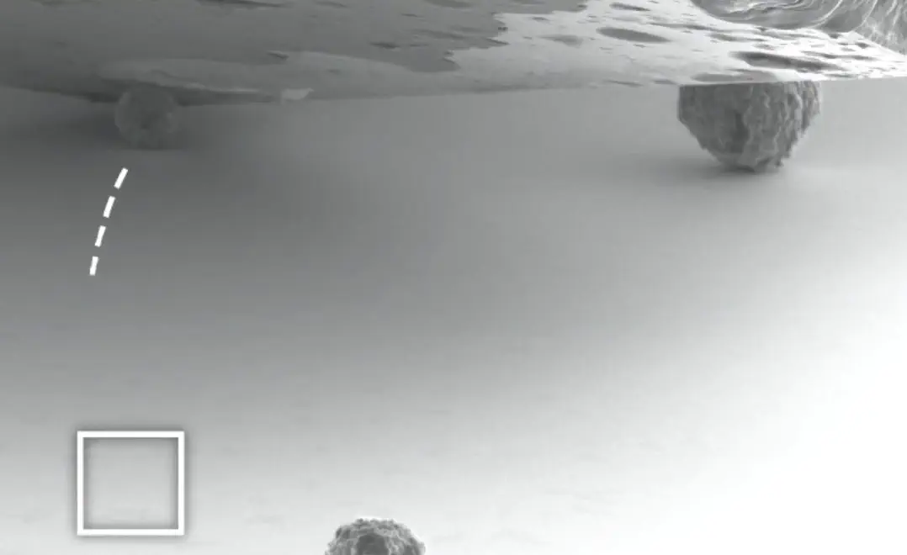
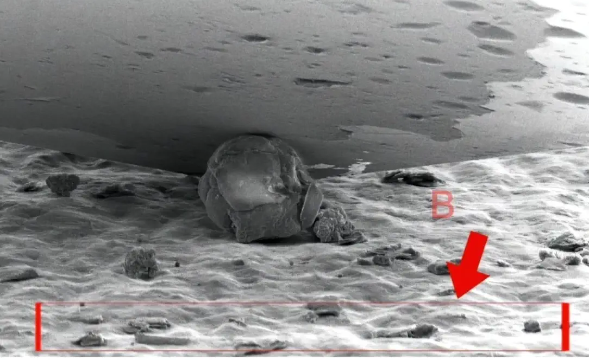
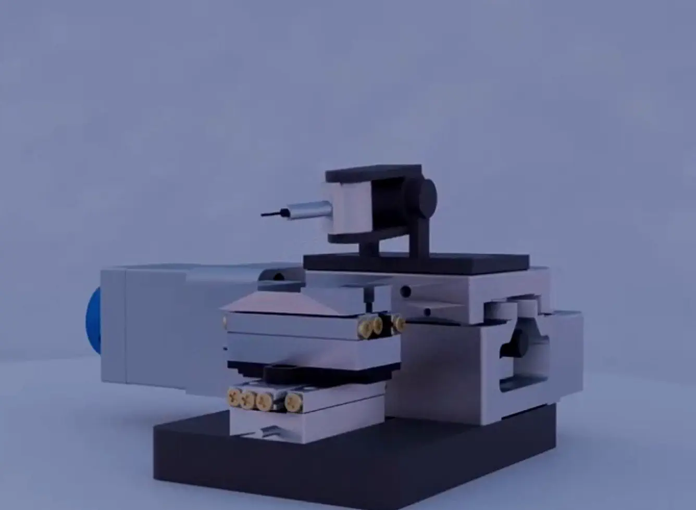
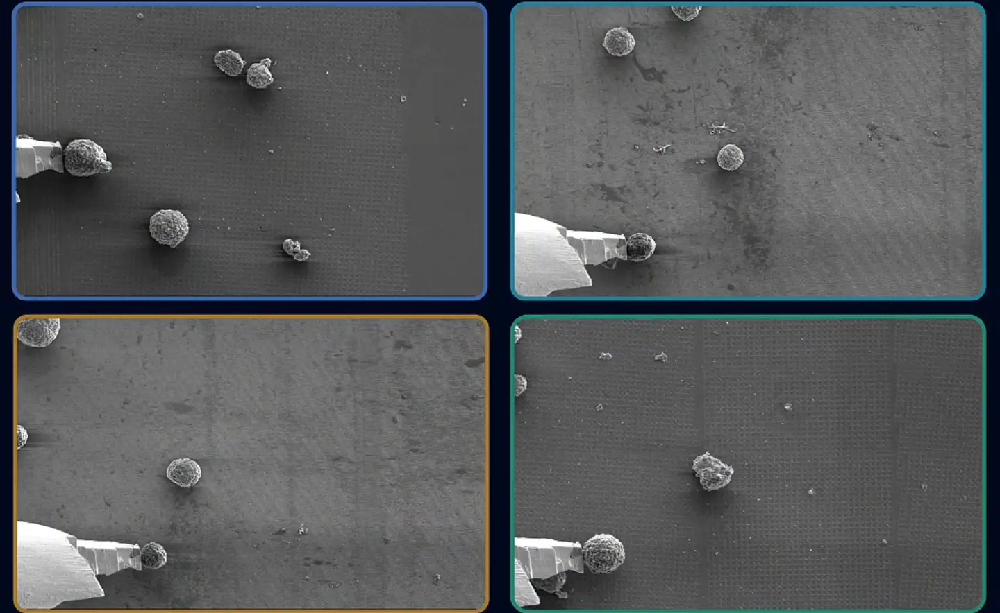

About Me 关于我
I am a graduate majoring in Electronic Science and Technology (National First-class Program) at Northeast Petroleum University. I have been recognized as an Outstanding Graduate, and my graduation thesis was awarded Outstanding Graduation Design.
I served as the overall Student Lead of the Innovation Base of the Electronic Engineering Experimental Center, and President of the Tianfang Sci-Tech Innovation Association. From January to March 2026, I worked as a Research Intern at the Intelligent Manufacturing and Precision Machining Laboratory, Tsinghua University.
My research interests center around Micro-nanorobot Autonomous Navigation (VLA Frameworks), Edge-Cloud Collaborative IoT, and Advanced Computer Vision Algorithms for industrial inspection. I have led 1 Provincial College Student Innovation Project, filed 3 patents, and authorized 2 software copyrights. I have published or accepted 7 academic papers (4 as first or co-first author), including papers accepted at IROS, and submissions to JRTIP and other venues.
我毕业于东北石油大学电子科学与技术专业（国家级一流本科专业建设点），荣获东北石油大学优秀毕业生，本科毕业设计荣获优秀毕业设计。
在校期间，我担任了学校电子工程实验中心创新基地学生总负责人以及天方科技创新创业协会主席，并入选了华为云学生开发者计划(HCSD)的校园大使 。2026年1月至3月，我在清华大学智能制造与精密加工实验室担任科研实习生。
我的核心研究方向为微纳机器人自主导航与操控（VLA具身智能框架）、云边协同工业物联网以及先进计算机视觉缺陷检测算法。我主持了黑龙江省大学生创新训练计划项目1项，申请国家专利3项（含发明专利1项），授权计算机软件著作权2项。在学术上，我撰写并发表/录用学术论文7篇（其中一作/共同一作累计4篇），研究成果发表于 IROS 或投递于 JRTIP 等。
News 最新动态
-
2026.06
Graduated from Northeast Petroleum University (Outstanding Graduate & Thesis). Two papers (MicroVLA & MG-VTLA) accepted at IEEE/RSJ IROS 2026. 从东北石油大学毕业，荣获优秀毕业生，毕业设计获评优秀毕业设计。两篇机器人领域论文（MicroVLA 与 MG-VTLA）被机器人领域顶级会议 IROS 2026 接收录用。
-
2026.04
Paper "Machine Vision Based Surface Defect Detection Method for PCBs..." accepted at Chinese Control Conference (CCC 2026). 论文《Machine Vision Based Surface Defect Detection Method for PCBs in Industrial Production》被中国控制会议 (CCC 2026)录用，为第一作者。
-
2026.03
Completed my Research Internship at the Intelligent Manufacturing and Precision Machining Lab, Tsinghua University. Worked on the MicroVLA and MG-VTLA frameworks. 圆满结束在清华大学智能制造与精密加工实验室的科研实习。参与研发了 MicroVLA 和 MG-VTLA 机器人导航及微操控框架。
-
2026.02
Paper on MicroVLA submitted to IEEE/RSJ IROS 2026. Co-first author. Accepted Jun 2026 以共同第一作者身份撰写的论文《MicroVLA: A Vision-Language-Action Framework for Microrobotic Navigation...》投稿至机器人领域顶级会议 IROS 2026。已于2026年6月录用
Research Areas 研究方向
Micro-Robotic VLA Frameworks 微纳具身智能 (VLA)
Integrating Vision-Language-Action (VLA) models into micro-particle manipulation, introducing physical and force-field constraints to improve robotic micro-assembly success rates. 将视觉-语言-动作 (VLA) 模型引入微米级粒子操控，解决微观力场下的粘附与碰撞问题，实现高精度、物理感知的微纳机器人自主导航与操控。
Edge-Cloud Collaborative IoT & CV 云边协同物联网与视觉
Developing lightweight real-time object detection models (YOLO & DETR series) for edge terminals (Jetson Nano) and larger model architectures for cloud deployment. 设计面向边缘终端（如 Jetson Nano、国产 OpenHarmony 芯片）的轻量化实时目标检测模型，与云端大算力 DETR 模型协同，实现智能工业缺陷检测。
Selected Publications 学术成果
MicroVLA: A Vision-Language-Action Framework for Microrobotic Navigation Considering Inter-Particle Micro-Force Fields MicroVLA: 考虑粒子间微观力场的微型机器人导航视觉-语言-动作框架
IEEE/RSJ International Conference on Intelligent Robots and Systems (IROS), 2026. (Accepted, Top Robotics Conference) IEEE/RSJ 国际智能机器人与系统大会 (IROS), 2026. (已录用, 机器人顶会)
LR-DETR: Ultra-Small Object Detection Model with Affine Calibration and High-Resolution Fusion Downsampling LR-DETR: 结合仿射校正与高分辨率融合下采样的超小目标检测模型
Journal of Real-Time Image Processing (JRTIP). (Under Review, JCR Q2, IF = 3.0) Journal of Real-Time Image Processing (JRTIP) 期刊. (在审, JCR Q2区, 影响因子3.0)
Machine Vision Based Surface Defect Detection Method for PCBs in Industrial Production 基于机器视觉的工业生产中 PCB 表面缺陷检测方法
2026 45th Chinese Control Conference (CCC). IEEE, 2026. (Accepted, EI, CAA Class A Recommended Conference) 第45届中国控制会议 (CCC 2026). IEEE, 2026. (已录用, EI检索, 中国自动化学会CAA推荐A类会议)
PCB detection algorithm based on improved YOLO11n 基于改进 YOLO11n 的 PCB 检测算法
2025 IEEE 14th Data Driven Control and Learning Systems (DDCLS). IEEE, 2025: 972-977. (Published, EI, CAA Class A Recommended Conference) 第14届数据驱动控制与学习系统会议 (DDCLS 2025). IEEE, 2025: 972-977. (已发表, EI检索, 中国自动化学会CAA推荐A类会议)
IEEE Xplore 查看论文Hydrocarbon detection method based on fractional adaptive superlet transform 基于分数阶自适应 Superlet 变换的油气检测方法
Journal of Geophysical Prospecting, 2(1), 2026: 77-87. (Published, EI-JA) Journal of Geophysical Prospecting 期刊, 2(1), 2026: 77-87. (已发表, EI期刊)
MG-VTLA: A Vision–Tactile–Language–Action Framework for Contact-Robust Robotic Micro-Grasping MG-VTLA: 用于鲁棒接触机器人微抓取的视觉-触觉-语言-动作框架
IEEE/RSJ International Conference on Intelligent Robots and Systems (IROS), 2026. (Accepted, June 2026, Top Robotics Conference) IEEE/RSJ 国际智能机器人与系统大会 (IROS), 2026. (已录用, 2026年6月, 机器人顶会)
Key Research Projects 核心科研项目
Cloud-Edge Collaborative Industrial Visual Inspection Platform 基于OpenHarmony物联的云边协同工业视觉检测平台
Developed a full cloud-edge IoT platform for industrial PCB defect detection. Developed YOLO-OLC for real-time edge devices (Jetson Nano, 552 FPS) and LF-DETR for high-accuracy cloud computing (Tesla T4, 99.32% AP50). Utilized HiSilicon Hi3861 platform running OpenHarmony for standardized edge-side messaging. 面向工业PCB自动化生产，设计了端侧搭载国产化 OpenHarmony 物联系统与边缘算力卡 YOLO-OLC 算法（Jetson Nano，552 FPS），以及云端大算力 LF-DETR 检测算法（Tesla T4，99.32% AP50）的云边协同缺陷检测平台。
- Supported by Heilongjiang Provincial College Student Innovation Project (as leader). 主持获批黑龙江省大学生创新训练计划项目（省级立项）。
- Granted 1 Software Copyright (1st author) & 1 Patent (1st inventor). 获批软件著作权1项（第一著作权人），申请专利1项（第一发明人）。
Vision-Language-Action (VLA) Framework for Microrobot Navigation 微观机器人导航的视觉-语言-动作（VLA）框架
Introduced the first physically aware VLA framework (MicroVLA) for micrometer-scale particle manipulation. Designed the Implicit Micro-Force Field Learning (IMFFL) mechanism, integrating contact mechanics to build a risk calculation model and risk maps, enabling microrobots to autonomously recognize and avoid high-adhesion danger zones. 将具身智能 VLA 引入微纳粒子操控。创新设计了隐式微力场学习（IMFFL）核心机制，结合接触力学理论构建微力场风险计算模型，生成语义分割环境风险图，实现对高粘附和微力矩风险区域的 自适应规避。
- Resulted in a co-first author paper accepted at IROS 2026 (June 2026). 成果产出机器人顶会 IROS 2026 共同第一作者论文（已录用，2026年6月）。




Wave Parameter Observation System Based on Wave Field Reconstruction 基于波浪场重构的波浪参数观测系统
This project uses binocular vision to achieve wave image matching, parameter inversion, 3D reconstruction, and short-term prediction. Motion compensation, algorithmic compensation, and three-axis gimbal compensation are integrated to improve measurement stability. 本项目采用双目视觉实现波浪图像匹配、参数反演、三维重构和短期预测。融合运动补偿、算法补偿与三轴云台物理补偿以提高测量稳定性。
- Awarded National Bronze Prize in the China International College Students Innovation Competition. 荣获中国国际大学生创新大赛（原互联网+）国家级铜奖。
- Responsible for core algorithm design (multimodal vision sensing, wave feature extraction). 负责核心算法设计（多模态视觉感知、波浪特征提取）。
- Achieved overall accuracy of 87%; wave height accuracy of ±(0.1 + 3% * measured value) m, wave direction range 0-360° with accuracy ±3°. 系统整体测量精度达到 87%；波高精度达 ±(0.1 + 3% * 测量值) m，波向精度达 ±3°。
Patents & Softwares 专利与软件著作权
PCB Defect Detection Platform Based on Visual Recognition (Utility Model Patent) 基于视觉识别的PCB板缺陷检测平台（实用新型专利）
Role:角色： 1st Inventor第一发明人 | ID: 2025200779334
A Data Analysis Device for Tight Sandstone Reservoirs (Utility Model Patent) 一种致密砂岩储层用的数据分析装置（实用新型专利）
Role:角色： 2nd Inventor第二发明人 | ID: ZL202422774355.8
A Dual-mode Wave Energy Vibration Power Generation Device (Invention Patent) 一种双模式波浪能振动发电装置（国家发明专利）
Role:角色： 3rd Inventor第三发明人 | ID: CN202510758218.1
Intelligent Interaction System for Industrial IoT Data Terminal (Software Copyright) 工业物联网数据终端智能交互系统（软件著作权）
Role:角色： 1st Copyright Owner第一著作权人 | ID: 2023SR1581621
Qianhang Yuntong Intelligent Educational Administration Management System (Software Copyright) “千航云通”智能教务管理系统（软件著作权）
Role:角色： 2nd Copyright Owner第二著作权人 | ID: 2023SR0995788
Honors & Competitions 荣誉与学科竞赛
Scholarships & Individual Honors 奖学金及个人荣誉
- Outstanding Student Scholarships优秀学生奖学金 3 Awards3项
- Science and Technology Competition Scholarships科技竞赛专项奖学金 Multiple Awards多项
- Northeast Petroleum University Outstanding Graduate东北石油大学优秀毕业生 2026
- Exemplary Student Organization Leader优秀社团干部标兵 / 优秀社团干部 2024 - 2025
Competition Achievements 学科竞赛奖项
- 2023.08 National Undergraduate Electronic Design Contest (NUEDC)全国大学生电子设计竞赛 (电赛) National 2nd Prize国家二等奖
- 2025.08 China TRIZ Cup Undergraduate Innovation Method Competition中国TRIZ杯大学生创新方法大赛 National 2nd Prize国家二等奖
- 2024 / 2025 China International College Students Innovation Competition中国国际大学生创新大赛 (原互联网+) National Bronze / Prov. Gold & Silver国家铜奖 1项 / 省级金奖 1项、银奖 2项
- 2024.11 National Undergraduate Physics Experiment Competition全国大学生物理实验竞赛 National 3rd Prize国家三等奖
- 2023 / 2024 National University Students Intelligent Car Competition全国大学生智能汽车竞赛 (智能车) Northeast Division 2nd Prize (x2)东北赛区二等奖 2项
- 2024.11 ICAN College Students Innovation & Entrepreneurship CompetitioniCAN大学生创新创业大赛 Provincial 1st Prize省级一等奖
- 2023.11 National Undergraduate Mathematical Modeling Contest全国大学生数学建模竞赛 (国赛) Provincial 2nd Prize省级二等奖
- 2024.05 National Undergraduate Optoelectronic Design Competition全国大学生光电设计竞赛 Provincial 2nd Prize省级二等奖